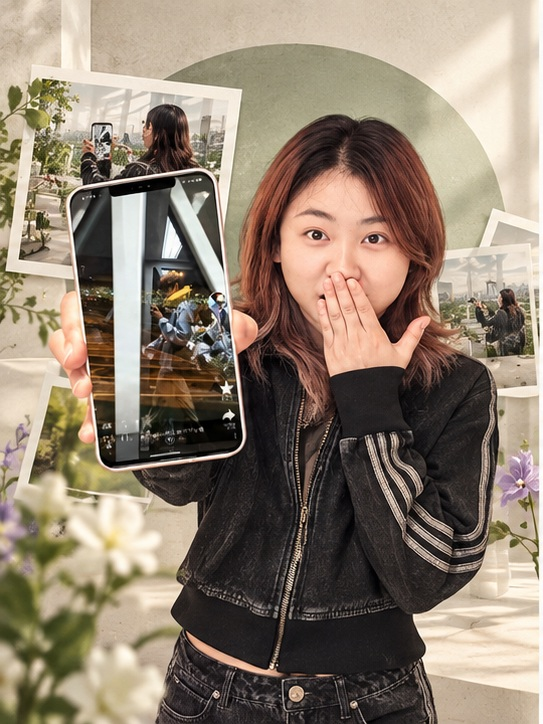
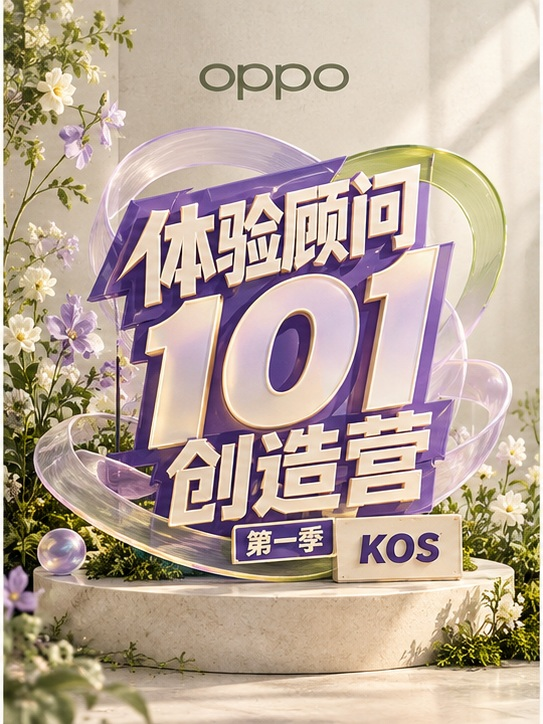
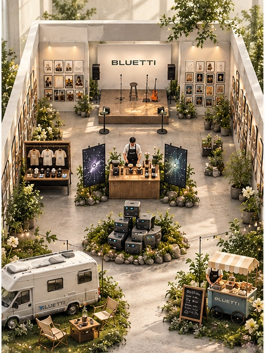
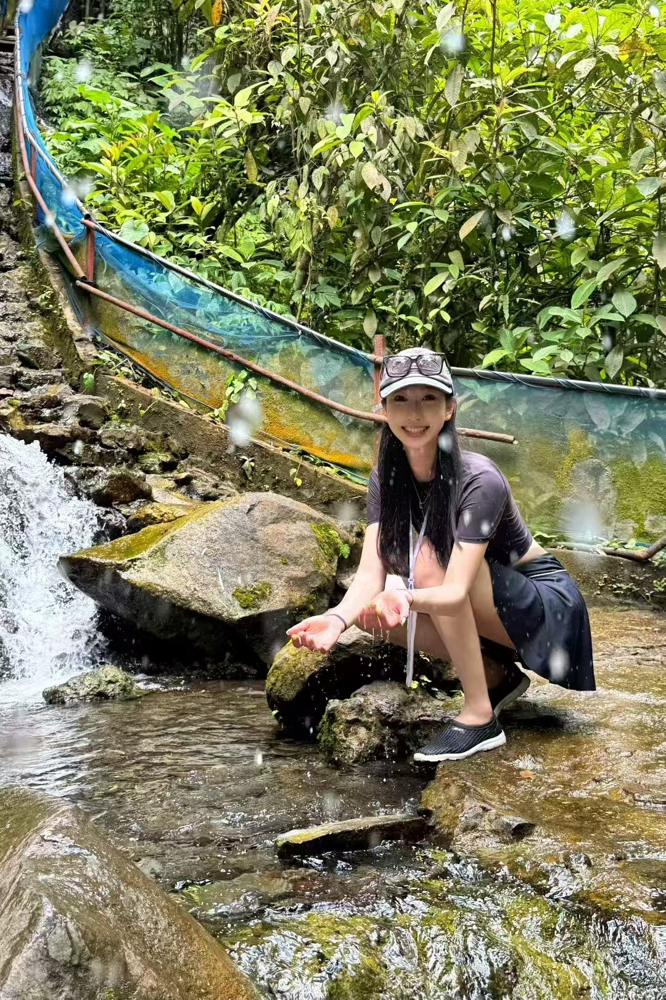

CONTENT & STRATEGYMADE WITH CURIOSITYPORTFOLIO / 2026
董冉 / 内容策划与创作
Dong Ran.
把产品价值，讲成用户在意的故事。
做内容，也用镜头记录生活。
这里有我参与的项目，也有我的旅行与日常。
HOW I WORK不只提出想法，
不只提出想法，
也让它落地。
从洞察、创意到执行，持续积累我的内容方法。
精选作品 Selected work
01 — 044.5W若星联动内容浏览
200+KOS 内容方案累计输出
14WBLUETTI 达人内容累计曝光
0 → 4400个人账号粉丝增长

查看项目 ↗01 / OPPO
OPPO品牌矩阵账号
内容策略 · 人设与栏目 · 账号增长

查看项目 ↗02 / INCUBATION
KOS孵化项目
平台洞察 · 内容 Demo · 导购赋能

查看项目 ↗03 / BLUETTI
一度电的创造力
海外传播 · 达人合作 · 线下展策划
04 / INDEPENDENT
小红书「百万咕噜」
独立拍剪 · 内容测试 · 商业合作
封面为 AIGC 概念视觉 · 项目详情内展示原始作品与过程材料
关于我 A little about me
05 / ABOUTA FEW WORDS ABOUT ME董冉 Dong RanCONTENT / CURIOSITY / CONNECTION
好奇心是起点。
把想法做出来，是日常。
我有海外商科背景，对 3C 数码与科技消费品牌保持兴趣。在 OPPO 体系的实习中，我持续接触新品传播与用户内容，关注如何把产品功能讲成用户愿意看、能够理解的故事。
也独立运营自己的小红书账号，从选题、拍摄到剪辑与发布，亲手验证每一个想法。工作之外，我喜欢旅行、拍照和听播客。
NOW
香港大学政策经济哲学硕士 · 应届生
BEFORE伯明翰大学会计与金融本科
工作之外，还是我 Off the clock
进入个人生活页 ↗
TRAVEL / PHOTOGRAPHY / PODCASTS有作品，
有作品，
也有自己的生活。
12 个目的地的旅行照片、耳机里的节目，
还有工作之外，我喜欢的那些事。
董冉 / 保持好奇，继续创作很高兴，你看到了这里。
我是董冉，
喜欢科技，也喜欢生活。
我从用户的日常里寻找选题，
把想法变成能被看见的内容。
也在旅行、影像与声音中，
不断认识更大的世界。
谢谢你的时间。回到顶部 ↑